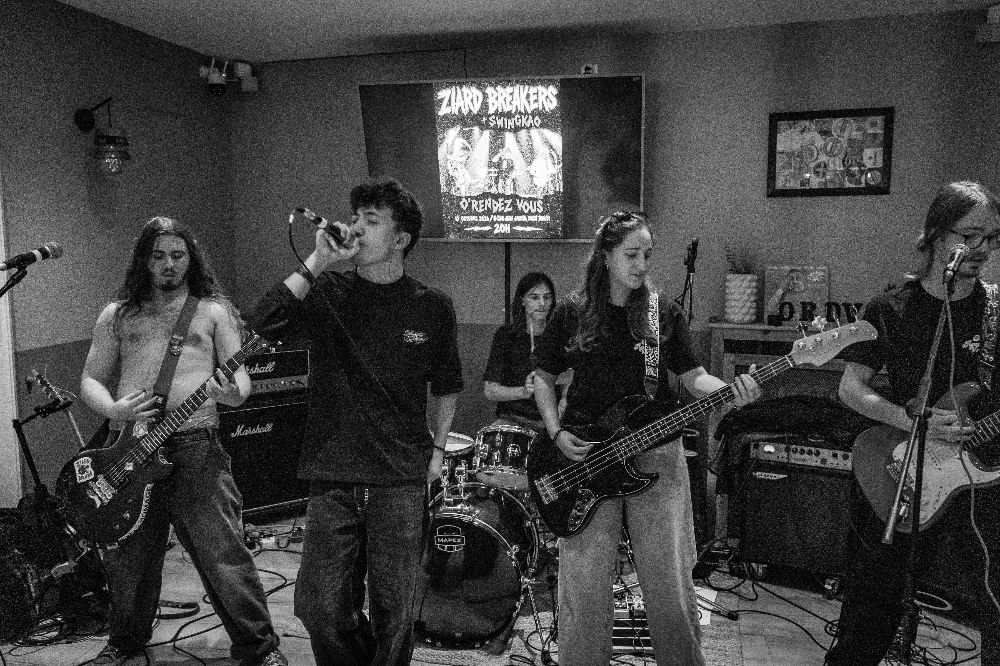

Biographie
Créé en 2022, Ziard Breakers est un projet punk rock aux inspirations métal basé à Lille.
Composé de 5 membres âgés de 18 à 20 ans, le groupe se démarque par son énergie live et sa créativité.
Après plusieurs changements de line-up, Ziard Breakers travaille aujourd'hui sur la composition d'un EP, avec des morceaux riches en émotion, tout en gardant son énergie signature.


L'esprit DIY et la scène
Indépendants et passionnés, nous gérons notre projet de A à Z : de la composition dans notre local lillois jusqu'à la création de ce site web et de notre propre matériel.
Mais notre véritable terrain de jeu reste la scène. On puise nos influences dans le métal alternatif et le punk old-school pour transformer chaque concert en un moment de partage intense avec le public nordiste.
Écouter et suivre le groupe
Tous nos liens (musique, réseaux, vidéos) sont regroupés au même endroit.
